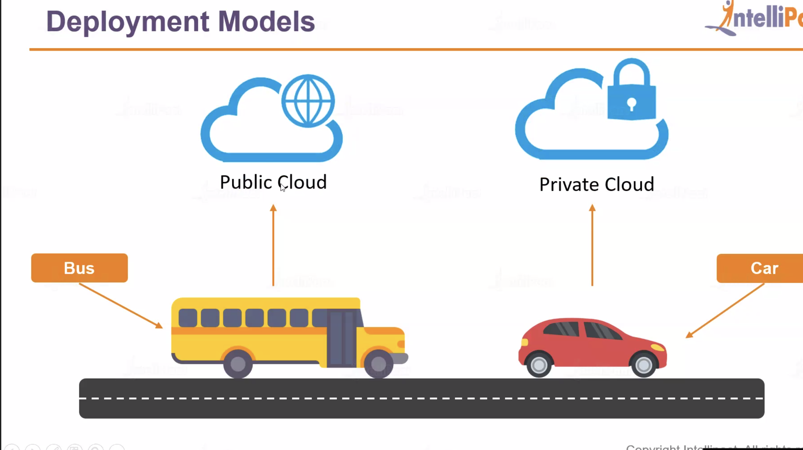

Cloud Deployment Models
Cloud deployment models can be categorized into:
- Public Cloud: Accessible by anyone and maintained by cloud vendors. Example: Microsoft Azure, AWS.
- Private Cloud: Used by an individual or organization and kept behind a firewall for enhanced security.
Example: Banks share FD and RD resource details and deploy these on a public cloud platform for more efficiency and scalability.
